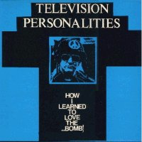
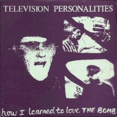
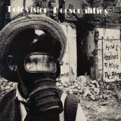

Television Personalities |
 1986 - Dreamworld - DREAM 4 - 12" Songs: How I Learned To Love The Bomb Now Your Just Being Ridiculous God Snaps His Fingers |
 1986 - Dreamworld - DREAM 10 - 7" Songs: How I Learned To Love The Bomb (Extended Version) The Grocer's Daughter A Girl Called Charity
|
 1992 - Overground - OVER30/CD - 12"/CD Songs: How I Learned To Love The Bomb (Extended Version) Now Your Just Being Ridiculous Then God Snaps His Fingers A Girl Called Charity She Was Only The Grocer's Daughter
Featuring: Daniel, Jowe and Jeffrey |